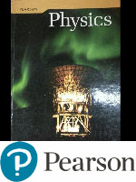
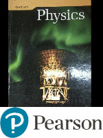

PHYSICS 30
Unit 8: Atomic Physics
Unit Themes and Emphases
- Energy and Matter
Focussing Questions
- What is the structure of atoms?
- How can models of the atom be tested?
- How does knowledge of atomic structure lead to the development of technology?
Unit D: Atomic Physics
Themes: Energy and MatterOverview: In this unit, students study the development and modification of models of the structure of matter.
This unit builds on:
- • Science 9, Unit E: Space Exploration
- • Physics 20, Unit C: Circular Motion, Work and Energy
- • Physics 30, Unit A: Momentum and Impulse, Unit B: Forces and Fields and Unit C: Electromagnetic Radiation
Focusing Questions:
- How is the atom organized?
- How can a model of(SI the atom and the nucleus be subjected to experimental tests?
- How does knowledge of the internal structure of the atom lead to the development of applications of energy supply and to the technology of diagnostic imaging?
Students will:
- 1. describe the electrical nature of the atom
- 2. describe the quantization of energy in atoms and nuclei
- 3. describe nuclear fission and fusion as powerful energy sources in nature
- 4. describe the ongoing development of models of the structure of matter.
- • charge-to-mass ratio (Thomson’s experiment)
- • classical model of the atom (Rutherford, Bohr)
- • spectra: continuous, line emission and line absorption
- • energy levels (states)
- • de Broglie hypothesis
- • quantum mechanical model
- • half-life
- • nuclear decay
- • nuclear reactions
- • Standard Model of matter
D1 Students will describe the electrical nature of the atom.
Specific Outcomes for Knowledge Students will:30–D1.1k describe matter as containing discrete positive and negative charges
30–D1.2k explain how the discovery of cathode rays contributed to the development of atomic models
30–D1.3k explain J. J. Thomson’s experiment and the significance of the results for both science and technology
30–D1.4k explain, qualitatively, the significance of the results of Rutherford’s scattering experiment, in terms of scientists’ understanding of the relative size and mass of the nucleus and the atom.
Specific Outcomes for Science, Technology and Society (STS) (Nature of Science Emphasis)
Students will:
30–D1.1sts explain that scientific knowledge may lead to the development of new technologies, and new technologies may lead to or facilitate scientific discovery (ST4) [ICT F2–4.4]
- • analyze how the identification of the electron and its characteristics is an example of the interaction of science and technology
- • analyze the operation of cathode-ray tubes and mass spectrometers.
Specific Outcomes for Skills (Nature of Science Emphasis)
Initiating and Planning
Students will:
30–D1.1s formulate questions about observed relationships and plan investigations of questions, ideas, problems and issues
- • identify, define and delimit questions to investigate; e.g., “What is the importance of cathode rays in the development of atomic models?” (IP–NS1)
- • evaluate and select appropriate procedures and instruments for collecting evidence and information, including appropriate sampling procedures; e.g., use electric and magnetic fields to determine the charge-to-mass ratio of the electron (IP–NS4) [ICT C6–4.5, F1–4.2].
Students will:
30–D1.2s conduct investigations into relationships among observable variables and use a broad range of tools and techniques to gather and record data and information
- • perform an experiment, or use simulations, to determine the charge-to-mass ratio of the electron (PR–NS2, PR–NS3) [ICT C6–4.4, F1–4.2].
Students will:
30–D1.3s analyze data and apply mathematical and conceptual models to develop and assess possible solutions
- • determine the mass of an electron and/or ion, given appropriate empirical data (AI–NS3)
- • derive a formula for the charge-to-mass ratio that has input variables that can be measured in an experiment using electric and magnetic fields (AI–NS6).
Students will:
30–D1.4s work collaboratively in addressing problems and apply the skills and conventions of science in communicating information and ideas and in assessing results
- • select and use appropriate numeric, symbolic, graphical and linguistic modes of representation to communicate findings and conclusions (CT–NS2).
D2 Students will describe the quantization of energy in atoms and nuclei.
Specific Outcomes for Knowledge Students will:30–D2.1k explain, qualitatively, how emission of EMR by an accelerating charged particle invalidates the classical model of the atom
30–D2.2k describe that each element has a unique line spectrum
30–D2.3k explain, qualitatively, the characteristics of, and the conditions necessary to produce, continuous line-emission and line-absorption spectra
30–D2.4k explain, qualitatively, the concept of stationary states and how they explain the observed spectra of atoms and molecules
30–D2.5k calculate the energy difference between states, using the law of conservation of energy and the observed characteristics of an emitted photon
30–D2.6k explain, qualitatively, how electron diffraction provides experimental support for the de Broglie hypothesis
30–D2.7k describe, qualitatively, how the two-slit electron interference experiment shows that quantum systems, like photons and electrons, may be modelled as particles or waves, contrary to intuition.
Specific Outcomes for Science, Technology and Society (STS) (Nature of Science Emphasis) Students will:
30–D2.1sts explain that scientific knowledge and theories develop through hypotheses, the collection of evidence, investigation and the ability to provide explanations (NS2)
- • investigate and report on the use of line spectra in the study of the universe and the identification of substances
- • investigate how empirical evidence guided the evolution of the atomic model
30–D2.2sts explain that scientific knowledge may lead to the development of new technologies, and new technologies may lead to or facilitate scientific discovery (ST4) [ICT F2–4.4]
- • investigate and report on the application of spectral or quantum concepts in the design and function of practical devices, such as street lights, advertising signs, electron microscopes and lasers.
Specific Outcomes for Skills (Nature of Science Emphasis) Initiating and Planning
Students will:
30–D2.1s formulate questions about observed relationships and plan investigations of questions, ideas, problems and issues
- • predict the conditions necessary to produce line-emission and line-absorption spectra (IP–NS3)
- • predict the possible energy transitions in the hydrogen atom, using a labelled diagram showing energy levels (IP–NS3).
Students will:
30–D2.2s conduct investigations into relationships among observable variables and use a broad range of tools and techniques to gather and record data and information
- • observe line-emission and line-absorption spectra (PR–NS2)
- • observe the representative line spectra of selected elements (PR–NS2)
- • use library and electronic research tools to compare and contrast, qualitatively, the classical and quantum models of the atom (PR–NS1) [ICT C1–4.1, C7–4.2].
Students will:
30–D2.3s analyze data and apply mathematical and conceptual models to develop and assess possible solutions
- • identify elements represented in sample line spectra by comparing them to representative line spectra of elements (AI–NS6) [ICT C7–4.2].
Students will:
30–D2.4s work collaboratively in addressing problems and apply the skills and conventions of science in communicating information and ideas and in assessing results
- • select and use appropriate numeric, symbolic, graphical and linguistic modes of representation to communicate findings and conclusions (CT–NS2).
General Outcome
D3 Students will describe nuclear fission and fusion as powerful energy sources in nature.
Specific Outcomes for KnowledgeStudents will:
30–D3.1k describe the nature and properties, including the biological effects, of alpha, beta and gamma radiation
30–D3.2k write nuclear equations, using isotope notation, for alpha, beta-negative and beta-positive decays, including the appropriate neutrino and antineutrino
30–D3.3k perform simple, nonlogarithmic half-life calculations
30–D3.4k use the law of conservation of charge and mass number to predict the particles emitted by a nucleus
30–D3.5k compare and contrast the characteristics of fission and fusion reactions
30–D3.6k relate, qualitatively and quantitatively, the mass defect of the nucleus to the energy released in nuclear reactions, using Einstein’s concept of mass-energy equivalence.
Specific Outcomes for Science, Technology and Society (STS) (Nature of Science Emphasis)
Students will:
30–D3.1sts explain that the goal of science is knowledge about the natural world (NS1)
- • investigate the role of nuclear reactions in the evolution of the universe (nucleosynthesis, stellar expansion and contraction)
- • investigate annihilation of particles and pair production
30–D3.2sts explain that the products of technology are devices, systems and processes that meet given needs and that the appropriateness, risks and benefits of technologies need to be assessed for each potential application from a variety of perspectives, including sustainability (ST6, ST7) [ICT F2–4.2, F3–4.1]
- • assess the risks and benefits of air travel (exposure to cosmic radiation), dental X-rays, radioisotopes used as tracers, food irradiation, use of fission or fusion as a commercial power source and nuclear and particle research
- • assess the potential of fission or fusion as a commercial power source to meet the rising demand for energy, with consideration for present and future generations.
Specific Outcomes for Skills (Nature of Science Emphasis) Initiating and Planning
Students will:
30–D3.1s formulate questions about observed relationships and plan investigations of questions, ideas, problems and issues
- • predict the penetrating characteristics of decay products (IP–NS3).
Students will:
30–D3.2s conduct investigations into relationships among observable variables and use a broad range of tools and techniques to gather and record data and information
- • research and report on scientists who contributed to the understanding of the structure of the nucleus (PR–NS1).
Students will:
30–D3.3s analyze data and apply mathematical and conceptual models to develop and assess possible solutions
- • graph data from radioactive decay and estimate half-life values (AI–NS2) [ICT C6–4.3]
- • interpret common nuclear decay chains (AI–NS6)
- • graph data from radioactive decay and infer an exponential relationship between measured radioactivity and elapsed time (AI–NS2) [ICT C6–4.3]
- • compare the energy released in a nuclear reaction to the energy released in a chemical reaction, on the basis of energy per unit mass of reactants (AI–NS3).
Students will:
30–D3.4s work collaboratively in addressing problems and apply the skills and conventions of science in communicating information and ideas and in assessing results
- • select and use appropriate numeric, symbolic, graphical and linguistic
D4 Students will describe the ongoing development of models of the structure of matter.
Outcomes for KnowledgeStudents will:
30–D4.1k explain how the analysis of particle tracks contributed to the discovery and identification of the characteristics of subatomic particles
30–D4.2k explain, qualitatively, in terms of the strong nuclear force, why high-energy particle accelerators are required to study subatomic particles
30–D4.3k describe the modern model of the proton and neutron as being composed of quarks
30–D4.4k compare and contrast the up quark, the down quark, the electron and the electron neutrino, and their antiparticles, in terms of charge and energy (mass-energy)
30–D4.5k describe beta-positive (β β+) and beta-negative (β β-) decay, using first-generation elementary fermions and the principle of charge conservation (Feynman diagrams are not required).
Specific Outcomes for Science, Technology and Society (STS) (Nature of Science Emphasis)
Students will:
30–D4.1sts explain that concepts, models and theories are often used in interpreting and explaining observations and in predicting future observations (NS6a)
- • research and report on the development of models of matter
30–D4.2sts explain that scientific knowledge is subject to change as new evidence becomes apparent and as laws and theories are tested and subsequently revised, reinforced or rejected (NS4)
- • observe how apparent conservation law violations led to revisions of the model of the atom; i.e., an apparent failure of conservation laws required the existence of the neutrino
30–D4.3sts explain that scientific knowledge may lead to the development of new technologies, and new technologies may lead to or facilitate scientific discovery (ST4) [ICT F2–4.4]
- • investigate how high-energy particle accelerators contributed to the development of the Standard Model of matter.
Specific Outcomes for Skills (Nature of Science Emphasis)
Initiating and Planning
Students will:
30–D4.1s formulate questions about observed relationships and plan investigations of questions, ideas, problems and issues
- • predict the characteristics of elementary particles, from images of their tracks in a bubble chamber, within an external magnetic field (IP–NS3).
Students will:
30–D4.2s conduct investigations into relationships among observable variables and use a broad range of tools and techniques to gather and record data and information
- • research, using library and electronic resources, the relationships between the fundamental particles and the interactions they undergo (PR–NS1) [ICT C1–4.1].
Students will:
30–D4.3s analyze data and apply mathematical and conceptual models to develop and assess possible solutions
- • analyze, qualitatively, particle tracks for subatomic particles other than protons, electrons and neutrons (AI–NS2) [ICT C7–4.2]
- • write β β+ and β- β- decay equations, identifying the elementary fermions involved (PR–NS4)
- • use hand rules to determine the nature of the charge on a particle (AI–NS6)
- • use accepted scientific convention and express mass in terms of mega electron volts per c2 (MeV/c2), when appropriate (AI–NS1).
Students will:
30–D4.4s work collaboratively in addressing problems and apply the skills and conventions of science in communicating information and ideas and in assessing results
- • select and use appropriate numeric, symbolic, graphical and linguistic modes of representation to communicate findings and conclusions (CT–NS2).
Links to Mathematics
The following mathematics outcomes are related to the content of Unit D but are not considered prerequisites.
| Concept | Mathematics Course, Strand and Specific Outcome |
|---|---|
| Data Collection and Analysis | Grade 9 Mathematics, Statistics and Probability (Data Analysis), Specific Outcome 3 |
| Measurement and Unit Conversions | Mathematics 10C, Measurement, Specific Outcomes 1 and 2; Mathematics 10-3, Measurement, Specific Outcome 1; Mathematics 20-3, Algebra, Specific Outcome 3 |
| Trigonometry | Mathematics 10C, Measurement, Specific Outcome 4; Mathematics 10-3, Geometry, Specific Outcomes 2 and 4 |
| Rate and Proportions | Mathematics 20-2, Measurement, Specific Outcome 1 |
| Graph Analysis | Mathematics10C, Relations and Functions, Specific Outcomes 1, 4 and 7; Mathematics 20-3, Statistics, Specific Outcome 1 Mathematics 30-1, Relations and Functions, Specific Outcomes 9 and 14 Mathematics 30-2, Relations and Functions, Specific Outcome 6 |
| Solving Equations | Mathematics 30-1, Relations and Functions, Specific Outcome 10; Mathematics 30-2, Relations and Functions, Specific Outcome 3 |
| Scale Diagrams | Mathematics 20-2, Measurement, Specific Outcome 2; Mathematics 20-3, Geometry, Specific Outcome 2 |
| Slope | Mathematics10C, Relations and Functions, Specific Outcomes 3 and 5; Mathematics 20-3, Algebra, Specific Outcome 2 |
| Powers | Mathematics10C, Algebra and Number, Specific Outcome 3 |
Chapter 15: Electric force and energy quantization determine atomic structure.
Key Concepts
- charge-to-mass ratio
- classical model of the atom
- continuous and line spectra
- energy levels
- quantum mechanical model
Knowledge
- describe matter as containing discrete positive and negative charges
- explain how the discovery of cathode rays helped develop atomic models
- explain the significance of J.J. Thomson’s experiments
- explain Millikan’s oil-drop experiment and charge quantization
- explain the significance of Rutherford’s scattering experiment
- explain how electromagnetic theory invalidates the classical model of the atom
- describe how each element has a unique line spectrum
- explain continuous and line spectra
- explain how stationary states produce line spectra
- calculate the energy difference between states, and the characteristics of emitted photons
Science, Technology, and Society
- explain how scientific knowledge and theories develop
- explain the link between scientific knowledge and
Flippity Review Questions for Chapter 15
15.1 The Discovery of the Electron
In the 5th century BC, Democritus used the word atom (from atomos meaning undivisible, uncuttable) to describe the smallest particles of matter.This was shown by heating compounds and breaking them into their component elements.
In 1803 John Dalton developed an atomic theory to explain why elements combined in specific ratios to form compounds. This work led to the modern periodic table of the elements. However, it did not explain what was inside the atom.
Dalton’s model of the atom (Democritus). Solid and indivisible.
In 1897 Joseph John Thomson discovered that cathode rays are negatively charged particles. These particles were later called electrons.
J.J. Thompson proposed that atoms were made of a solid positive with electrons embedded in it to balance the electrical charge. (raison bun or plum pudding)
15.2 Quantization of Charge
In 1909 Millikan announced that he had measured the charge of the electron.By calculating the minimum increase in the electric charge Millikan was able to determine the charge of an electron to be e= -1.60×10-19 C.
Combined with Thompson’s charge to mass ratios, Millikan’s value also led to the mass of the electron, proton and alpha particle.
15.3 The Discovery of the Nucleus
1909 Ernest Rutherford was working with alpha particles and fired a beam of alpha particles at an extremely thin gold foil (few atoms thick).His hypothesis:
- the electrons would have very little effect on the alpha particles due to the alpha particle’s relative mass.
- the positive part of the gold would cause one or two degrees of scattering because the mass was so spread out throughout the gold foil.
The alpha particles scattered a large amount, some even traveled straight back from the foil.
He said “It is like shooting a cannonball at tissue paper and having the cannonball rebound at you.”
Conclusions:
- The alpha particles bounced off of something, therefore what they hit had to be very heavy and dense.
- The alpha particles were defected in all directions which would only happen if they passed by a positively charged object.
- The size of the center was extremely small compared to the size of the atom.
15.4 The Bohr Model of the Atom
If the electrons in the Rutherford model are moving in a circle than they are constantly accelerating.According to Maxwell’s equations an accelerating electron would radiate EMR, lose energy and spiral into the nucleus.
Bohr used spectroscopy to make a new model of the atom explaining the electrons movement.
A heated low pressure gas emits very specific frequencies of visible light EMR.
Each elements exhibits a unique pattern of EMR when heated, or when light is shone through.
An electron can move from one energy level to another only by either emitting or absorbing energy equal to the difference between the two energy levels. An electron that stays in a particular orbit does not radiate any energy.
Since the size and shape of the orbit remain constant along with the energy of the electron, the orbits are often called stationary orbits.
15.5 The Quantum Model of the Atom
Due to the wave nature of atoms, the only stable orbitals are ones in which the circumference of the orbit is equal to a whole number multiple of the electron’s wavelength.Cn = nλ
| 2πn = n | h |
| mv |
As a result it is impossible to measure the exact radius of orbit. Orbits are expressed as a zone of statistical probability.
Program of Studies
Alberta Science 10
Program of Studies

Alberta Science 10
Program of Studies
Contact me:
BCHS Barrhead AB
Steven Montgomery
steven.montgomery@pembinahills.caBCHS Barrhead AB
Textbook
Physics 20 & 20 Textbook (2009)

Physics 20 & 20 Textbook (2009)
